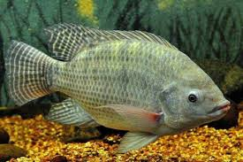

 Ikan Mujair Mujaer adalah ikan yang sering dijual sejak dahulu. Ikan Badut Ikan badut atau Clown Fish . Lion Fish Lion fish mirip singa tapi mirip kalajengking. Moor Fish Moor Fish adalah ikan warna hitam dengan pola kuning.